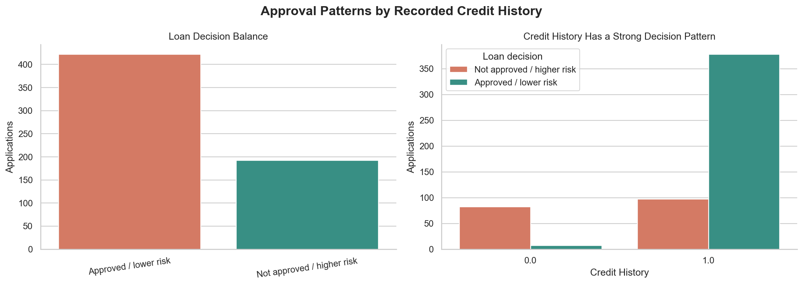
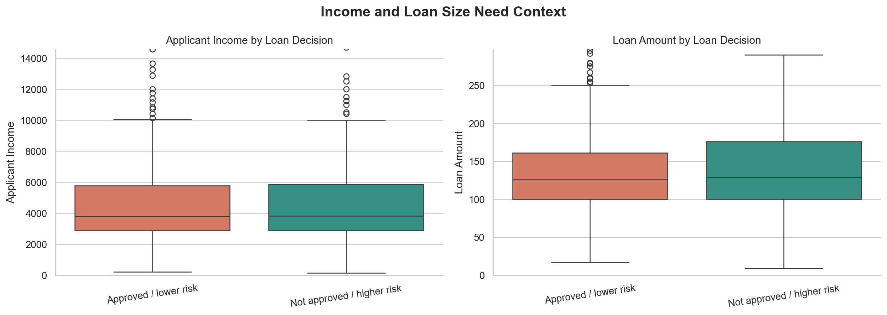
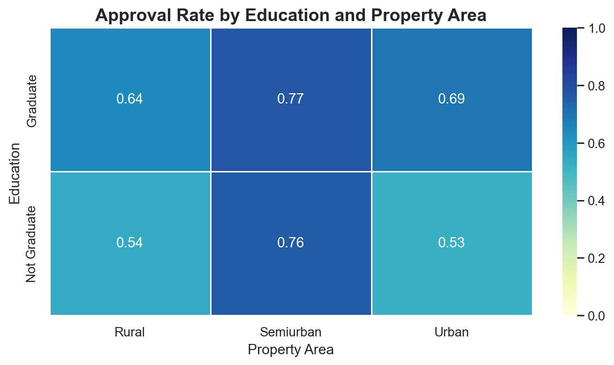
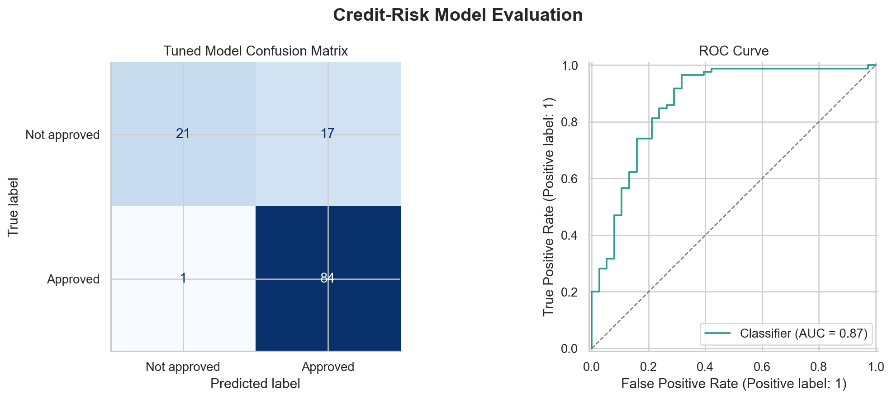

Loan Approval Risk Analytics
Analyze loan approval outcomes with a risk-aware lens while avoiding unsupported claims about actual default behavior.

What the analysis needed to answer
Analyze loan approval outcomes with a risk-aware lens while avoiding unsupported claims about actual default behavior.
A regularized logistic regression workflow cleans missing values, engineers income features, audits multicollinearity, and evaluates threshold tradeoffs for approval decisions.
The signals that mattered most
- Credit history is the clearest approval signal in the dataset.
- Income and loan amount add context but do not explain decisions alone.
- Missing values affect important application fields and need imputation.
- Threshold choice changes the balance between conservative and inclusive decisions.
What the notebook covers
- Missing-value and target-balance audit
- Credit history, income, loan amount, education, and property-area analysis
- Statistical tests for numeric and categorical fields
- Correlation and VIF review for engineered income features
- ROC, precision-recall, confusion matrix, and threshold analysis
Selected charts from the notebook



How this can be used
A regularized logistic regression workflow cleans missing values, engineers income features, audits multicollinearity, and evaluates threshold tradeoffs for approval decisions.
The full notebook contains the data preparation, statistical analytics, modeling workflow, evaluation outputs, and human-readable interpretation behind this summary page.